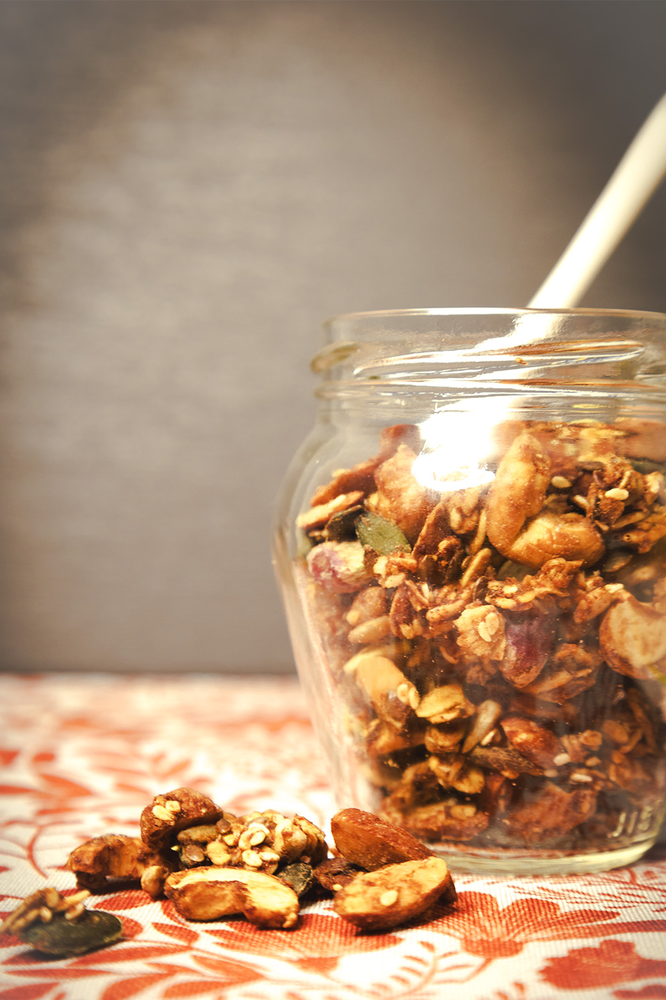
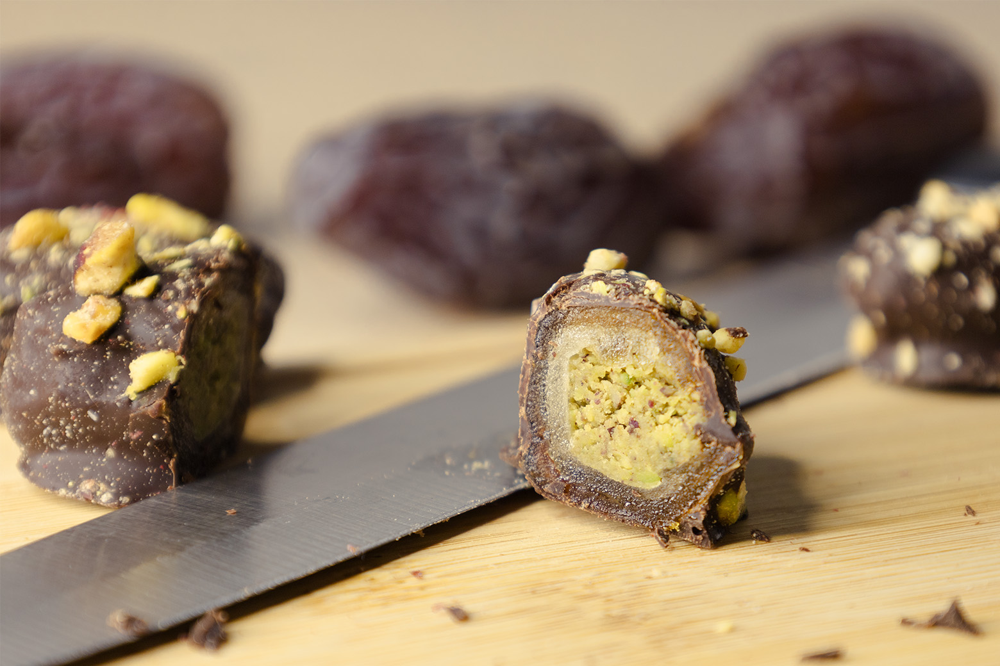
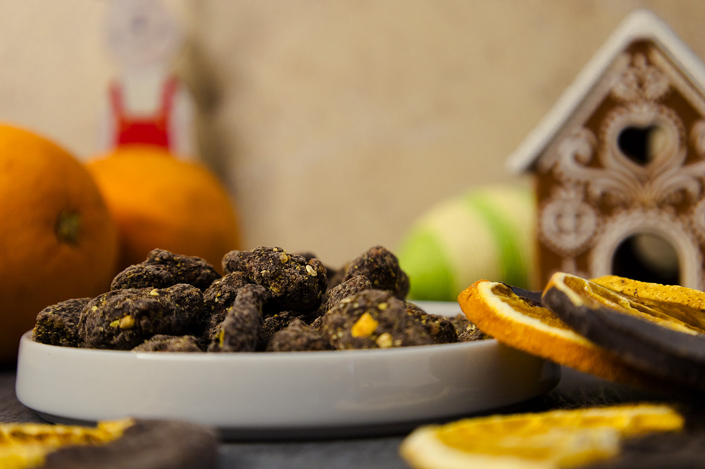

Sobre mim
Sou o Francisco, de Coimbra. Antes de criar, ouço: a sua história, os seus clientes, os seus objetivos. Cada projeto começa do zero e é desenhado só para si: fotografia, redes sociais, lojas online, sites e apps. Uso inteligência artificial para trabalhar mais depressa e testar mais ideias, e também para criar assistentes e automações à medida do seu negócio. As decisões finais são sempre tomadas por mim, a pensar na sua marca.
Trabalhos selecionados
01Clara Doce
Loja online · Fotografia de produto · Gestão de redes sociais
Instagram: de cerca de 1900 para 2165 seguidores desde junho de 2025 (+14%)



ARF Lda EM BREVE
Site institucional · Web design · Wix Studio
My Kalb EM BREVE
Site · Web design · Wix Studio
Vanessa Abreu Terapeuta
Site · Web design
Demolha · Lugrade EM DESENVOLVIMENTO
App de gestão de demolha · FlutterFlow
Contactos
Conte-me a sua ideia.
Fazemos algo só seu.